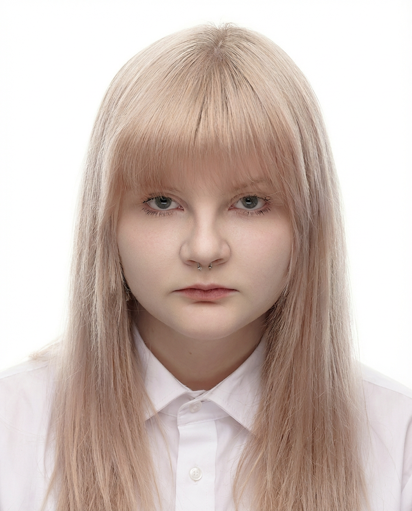
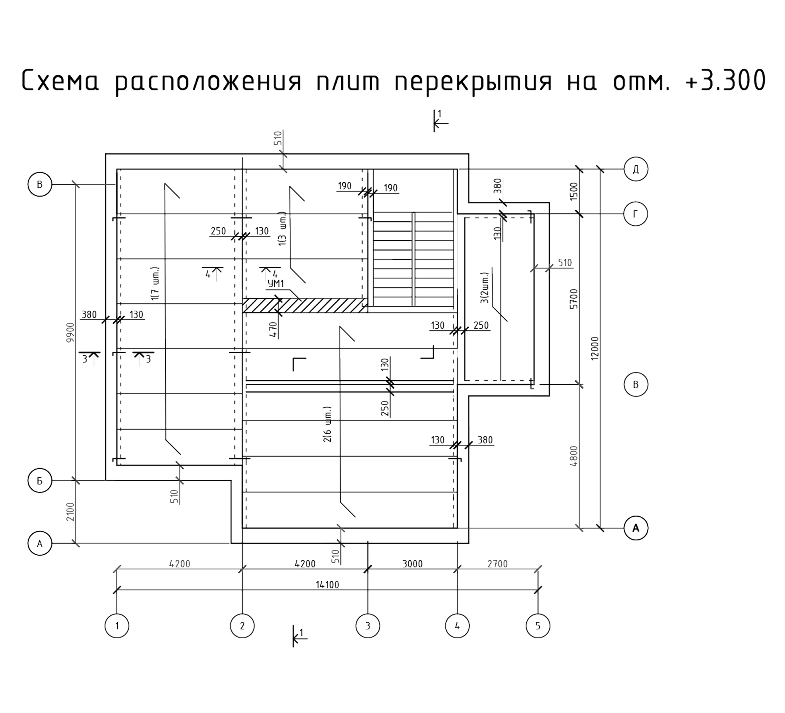
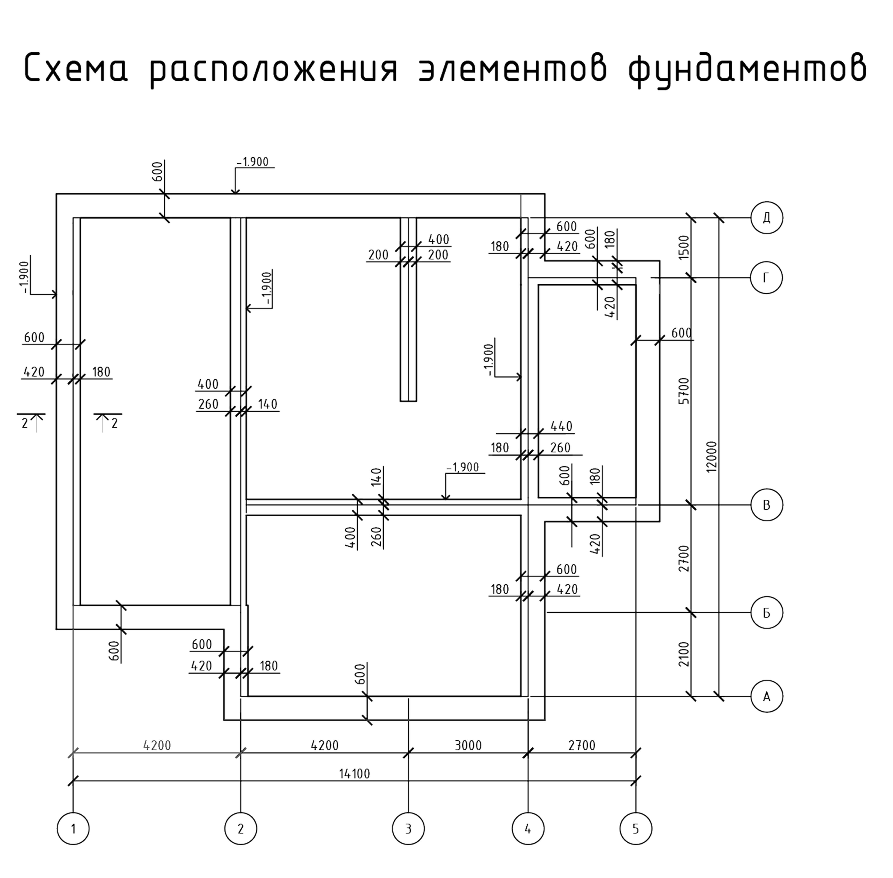
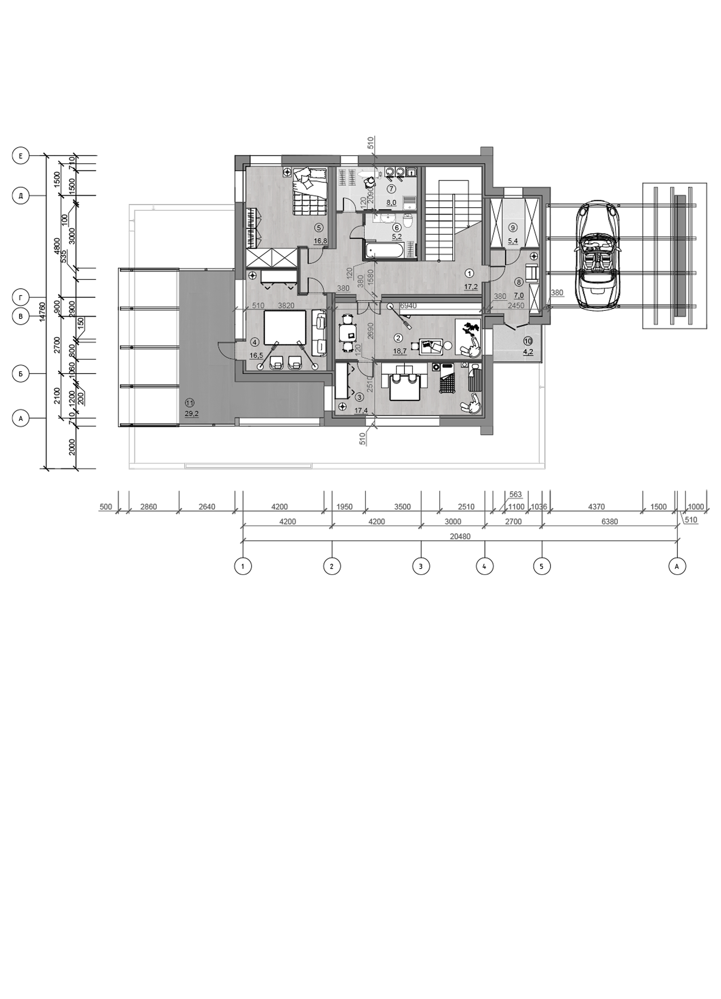
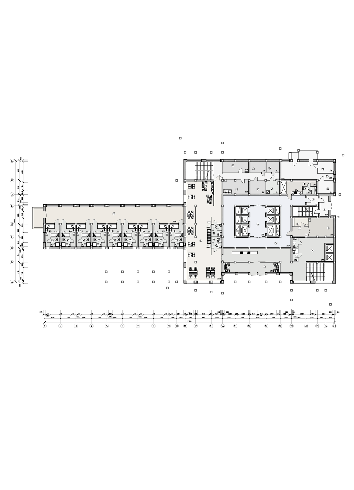
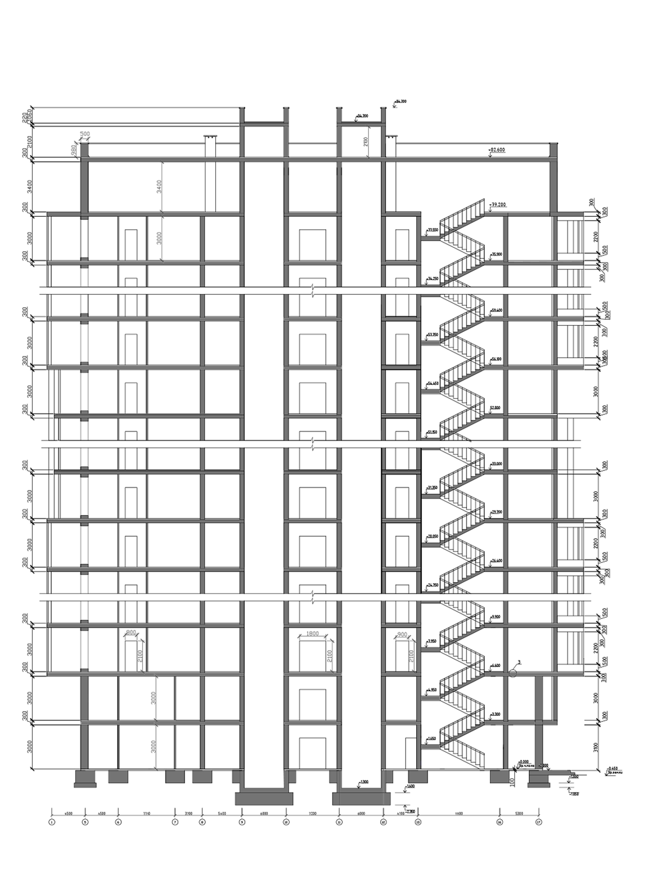
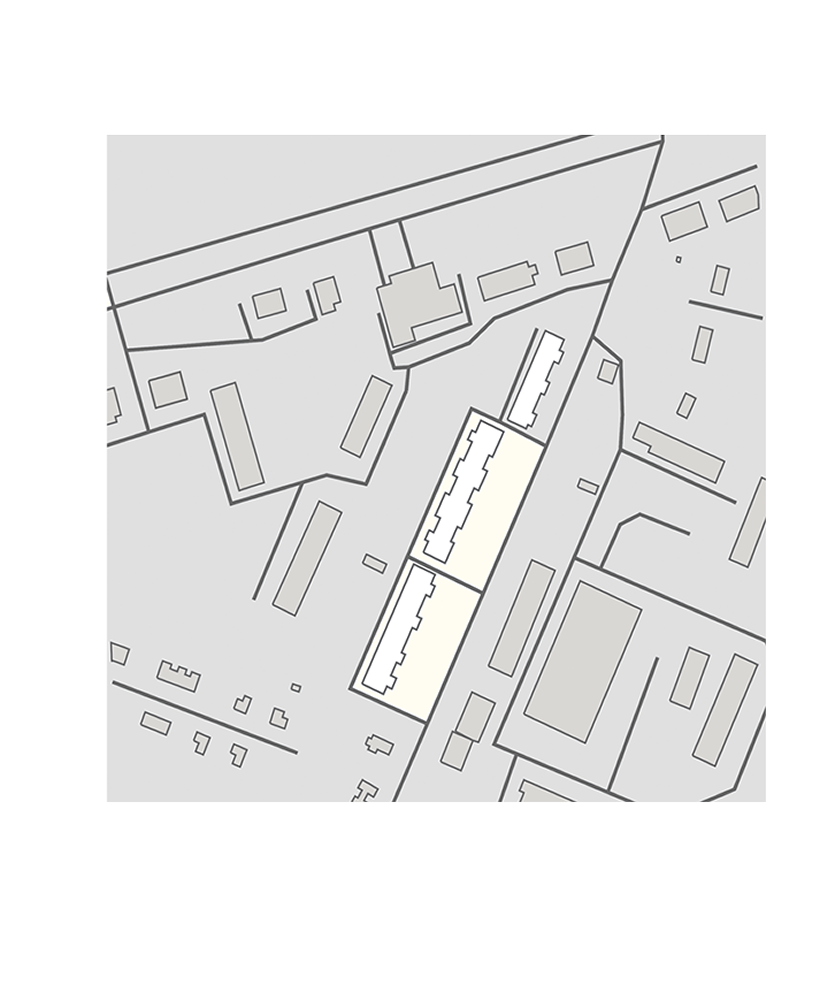
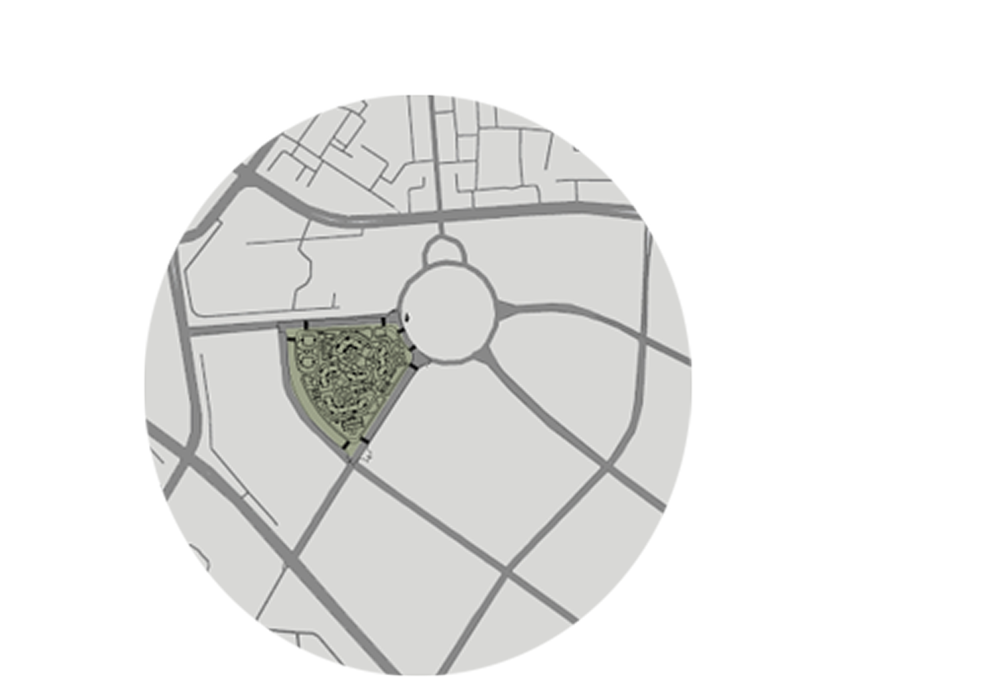

S.0195%
Autodesk AutoCAD
Рабочая документация: планы, разрезы, фасады, схемы и спецификации раздела АР.
Портфолио · 2026 · раздел АР
Проектирую жилые и общественные здания, разрабатываю интерьеры и 3D-визуализации. Внимательна к деталям — от первого эскиза до рабочего чертежа.

Я — архитектор из Минска. В 2025 году окончила МГКАИС и работаю техником-архитектором в ОАО «МАПИД», где занимаюсь графической подготовкой проектов полного цикла: от эскизных решений до рабочих чертежей раздела АР.
Мне близко вдумчивое проектирование — когда форма рождается из контекста, света и потребностей человека. Люблю чистую графику чертежей, точность узлов и момент, когда плоская схема превращается в пространство для жизни.
«Хорошая архитектура начинается с точного чертежа и честного отношения к месту».
Рабочая документация: планы, разрезы, фасады, схемы и спецификации раздела АР.
BIM-моделирование, семейства, спецификации и совместная работа над проектом.
Быстрое концептуальное моделирование и визуализация на ранних стадиях проектирования.
Фотореалистичная 3D-визуализация экстерьеров и интерьеров для защиты проектных решений.
Быстрая визуализация архитектурных сцен, анимации и видео-презентации.
Интерактивная визуализация, VR-презентации и создание иммерсивных материалов.
Анализ контекста, привязка проекта к местности и геопространственные данные.
Постобработка визуализаций, графические коллажи и архитектурная подача проектов.
Макеты, презентации, подбор материалов и наглядные материалы для заказчика.
Генерация концептов и быстрая проработка образов проектов с помощью нейросетей.
NEW · 2025 →Техник-архитектор 2 категории
Разработка цветовых решений фасадов жилых домов.
Разработка визуально-адресного ориентирования (ВАО) в составе проектной документации.
Выпуск рабочих чертежей и схем по СПДС, деталировка по эскизам архитектора.
Участие в проектировании жилых, общественных и промышленных объектов.
Составление спецификаций строительных материалов, оборудования и изделий по ТХ; подбор материалов с учётом их характеристик.
Нормоконтроль и работа с нормативной документацией: знание ГОСТ / СНиП.
Создание проектов с применением 3D-визуализации, в том числе генерация изображений с помощью ИИ.
Разработка интерьеров и согласование решений с заказчиком.
Техник-архитектор (практика)
Участие в разработке чертежей дизайн-обоснований и визуализаций.
Разработка планировочных чертежей.
Выполнение обмеров помещений с последующим составлением обмерных чертежей.
Разработка Г3.
Разработка проектной документации, 3D-моделирование интерьеров.
Выполнение архитектурных чертежей в AutoCAD.
Дом, развёрнутый к лесу. Курсовой проект 2023 года — малоэтажный жилой дом для жизни в окружении природы. Участок расположен в сельской местности и одной из границ примыкает к сосновому бору. Именно это стало отправной точкой планировочного решения: дом смещён ближе к въезду, чтобы раскрыть просторный задний двор в сторону леса и впустить пейзаж в жилые пространства.
Проект проработан от генерального плана до фасадов: выполнены планы и разрезы, цветовое решение и фотореалистичные визуализации в 3ds Max + Corona Render.


Дом состоит из двух частей. Первая, большая часть, включает общественные функции: гостиную с кухней, гостевую спальню, санузел и хозяйственный блок, связанный с навесом для машин и главным входом.
Вторая, меньшая часть, выполняет хозяйскую функцию: мастер спальня, совмещенный санузел и гардеробная, а также котельная, расположенная для удобства ввода коммуникаций.
Конструкции дома представляют собой несущие стены из блоков ячеистого бетона, располагающиеся по периметру и в центре здания. Кровля выполнена по классической стропильной системе из дерева с покрытием из металлических листов фальцевой кровли.
Декоративным, упорядочивающим и в то же время функциональным элементом служат металлические конструкции навесов над авто и террасой. Они накрыты монолитным поликарбонатом.
Программы, используемые во время проектирования: AutoCAD + Photoshop





Башенный дом с динамичным силуэтом. Курсовой проект 2024 года — многоэтажный жилой дом башенного типа для города Толочина Витебской области. Участок расположен во втором климатическом районе, на равнинном рельефе, с главным фасадом, ориентированным на улицу Тракторную.
Запроектирован дом на 8 квартир: 1 студия, 1 трёхкомнатная, 2 однокомнатные и 4 двухкомнатные. Также предусмотрены 2 общественных этажа с коворкингом и кафетерием на 50 мест. Дом состоит из 22 жилых этажей, 2 общественных этажей и 1 частичного этажа хостела с выходом на улицу.
Общая композиция здания динамична благодаря разнообразным балконам и парапетам. Основной объём отделки — облицовочный кирпич трёх оттенков серого: от тёмного до светлого. Первый этаж и некоторые элементы фасада отделаны металлическими облицовочными плитами комплиментарного бежевого цвета, выполненными под декоративную штукатурку.


Полный комплект рабочей документации для многоэтажного жилого дома башенного типа. Включает планы этажей, фасады, разрезы и узлы.
Программы, используемые во время проектирования: AutoCAD + Photoshop






Фотореалистичные визуализации экстерьера многоэтажного жилого дома. Показаны различные ракурсы и время суток для полного представления архитектурного образа.
Программы, используемые во время проектирования: 3ds Max + Corona Render + Photoshop


Визуализации интерьеров общественных и жилых помещений. Показаны концепции оформления коворкинга, кафетерия и жилых квартир.
Программы, используемые во время проектирования: 3ds Max + Corona Render + Photoshop + Prome AI


Жилой комплекс «Massimo» на 2910 жителей расположен в Октябрьском районе Минска, на пересечении улиц Николы Теслы и Леонида Левина. Запроектированная зона находится в секторе «Африка», рядом с секторами «Азия», «Счастливая планета» и «Квартал мировых танцев».
В центре проектируемого жилого комплекса располагается рекреационно-парковая зона, которая включает в себя спортивные площадки, площадки для тихого отдыха и пешеходные связи.
Программы, используемые во время проектирования: AutoCAD + Photoshop · 3ds Max + Corona Render




Современный санузел в минималистичном стиле с рифлёными стенами в нейтральных тонах. Подвесная сантехника и каменные поверхности создают ощущение простора. Элегантное освещение подчёркивает детали, а растения добавляют свежести и уюта. Идеальное сочетание функциональности и эстетики.
Софт: AutoCAD + Photoshop + Homestyler


Экспериментальный многофункциональный комплекс «Минск–Мир» — пожарное депо. Проект совмещает функциональные зоны с современной архитектурной формой, отвечая требованиям безопасности и эстетики городского пространства.
Софт: AutoCAD + Photoshop + Homestyler


Современная спальня с продуманной композицией и мягкой палитрой материалов. Сочетание функциональности, комфорта и эстетики в каждой детали.
Софт: AutoCAD + Photoshop + Homestyler


Планировка интерьера спальни была разработана в соответствии с техническим заданием и отражает мои профессиональные навыки как дизайнера.
Софт: Photoshop + Homestyler


Проект общественного здания «Научно-образовательный центр с обсерваторией» (корпус БГУ) выполнен по заданию на проектирование дипломного проекта 2025.
Проектируемый научно-образовательный центр с обсерваторией расположен в границах улиц Орловская — Богдановича — Некрасова в Советском районе. Этот участок находится в непосредственной близости от таких значимых объектов, как Парк Дружбы Народов и Храм иконы Божией Матери Взыскание погибших. Расположение — в соответствии со схемой детальных планов на территории города Минска.
Софт: AutoCAD + Photoshop · 3ds Max + Corona Render


Запланированный научно-образовательный центр состоит из трёх корпусов. Первый — общественный корпус с тремя этажами и шарообразной формой. Второй — научный корпус с обсерваторией, имеющий два этажа и криволинейную форму; обсерватория имеет круглую форму и три этажа. Третий — учебный корпус с тремя этажами и также криволинейной формой.
Научный и учебный корпуса имеют плоские эксплуатируемые кровли. Проектируемый комплекс расположен в границах улиц Орловская, Богдановича и Некрасова в Советском районе Минска, с главным фасадом, ориентированным на северо-восток.


Полный комплект рабочей документации научно-образовательного центра с обсерваторией. Включает генеральный план, планы корпусов, фасады, разрезы и узлы.
Программы, используемые во время проектирования: AutoCAD + Photoshop


Интерьер центра выполнен в светлых нейтральных тонах с паркетом и панорамным остеклением. Пространства зонированы: лаундж-зона с берёзовыми элементами и мягкой мебелью предназначена для отдыха, а учебные аудитории оснащены акустикой и трансформируемой мебелью под любые форматы.
Программы, используемые во время проектирования: 3ds Max + Corona Render · Photoshop + Prome AI


Открыта к проектам, стажировкам и интересным предложениям —
+375 29 814-01-42